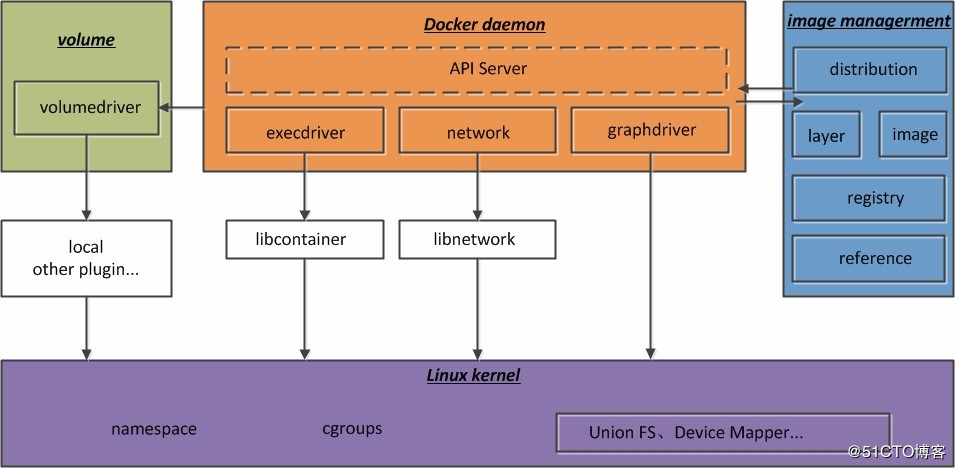
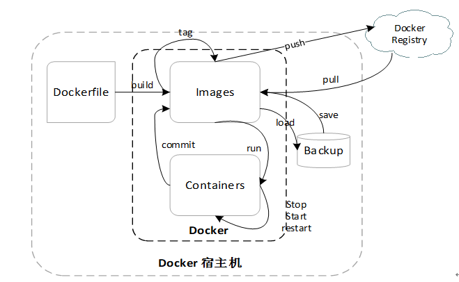

一、Docker是什么？
（1）、Docker概念
Docker是以Docker容器为资源分离和调度的单位，封装整个软件运行的环境，为开发者和系统管理员设计的，用于构建、发布和运行分布式应用的平台，它是一个跨平台、可移植并且简单易用的容器解决方案。
（2）、Docker容器云
容器云是以容器为资源分割和调度的基本单位，封装整个软件运行时环境，为开发者和系统管理员设计的，用于构建、发布和运行分布式应用的平台。当容器云专注于资源共享和隔离、容器编排和部署时，更接近于Iaas，当容器云渗透到应用支撑和运行环境时，它又接近于Pass.
二、Docker有何好处？
- 持续部署和测试： 容器消除了线上线下环境的差异，保证了应用生命周期的环境一致性和标准化。
- 跨平台支持： Docker可以适配很多的云平台，如AWS/GCP/Azure等一系列云平台。
- 环境标准化和版本控制：基于容器提供的环境一致化和标准化，可以使用Git等工具进行环境管理，
- 高资源利用率和隔离： 容器没有管理系统的额外开销，与底层共享操作系统，性能优良，系统负载更低，在同等条件下可以运行更多的实例，可以充分利用系统的资源。
- 容器跨平台性和镜像： 容器在Linux基础上为容器设置一整套的标准化配置方案，将应用及其依赖运行环境打包成镜像，真正实现”构建一次，到处运行“的理念。
- 易于理解且易用： 一个开发可以在15分钟内理解Docker并且安装使用。
- 应用镜像仓库： Docker官方构建了一个类GitHub的仓库，所有人都可以下载微服务插件。
三、Docker的原理？
Docker本质上是一个主机进程，通过namespace资源隔离，通过cgroups实现资源限制，通过写时复制机制（copy-on-write）实现高效的文件操作。
（1）、namespace资源隔离
namespace 6项隔离
- UTS： 主机名与域名
- IPC: 信号量、消息队列和共享内存
- PID: 进程编号
- Network: 网络设备、网络线、端口等
- Mount: 挂载点（文件系统）
- User： 用户和用户组
（2）、cgroups资源
cgroups是Linux内核提供的一种机制，这种机制可以根据需求吧一系列系统任务及其子任务整合到按资源划分等级的不同组内，从而为系统提供统一的框架。它不仅可以限制被namespace隔离起来的资源，还可以为资源设置权重、计算使用量、操控任务的启停等。
四大功能：
- 资源限制：可以对任务使用的资源总额进行限制，超过则提示OOM;
- 优先级分配：通过分配CPU时间片数量和磁盘IO带宽大小，实际上就是控制了任务运行的优先级；
- 资源统计：统计系统资源的使用量；
- 任务控制：可以对任务实行挂起、恢复等操作。
组织结构和基本规则：
传统的LInux是以init为根节点单根树形结构的任务模型，而docker则是多根树形结构的模型，不必受限于上一层级的任务，可以独自构成一个层级，易于管理。
规则：
- 同一个层级可以附加一个或者多个子系统；
- 一个子系统可以附加到多个子层级，当且仅当层级只有唯一一个子系统时；
- 系统每次新建一个层级时，该系统上的所有任务默认加入这个新建层级的初始化cgroups，这个cgroups也叫root cgroups;
- 任务在fork/clone自身时创建的子任务默认与原任务在同一个cgroups中，但是子任务允许被移动到不同的cgroups中。
（3）、Docker架构
Docker使用了传统的cs架构模式（cilent-server），架构图如下图所示。用户通过Docker client与Docker daemon建立通信，并将请求发送给后者。而Docker的后端是松耦合结构，不同模块各司其职，有机组合，完成用户的请求。

Docker daemon
Docker daemon是Docker最核心的后台进程，它负责响应来自Docker client的请求，然后将这些请求翻译成系统调用完成容器管理操作。该进程会在后台启动一个API Server，负责接收由Docker client发送的请求；接收到的请求将通过Docker daemon分发调度，再由具体的函数来执行请求。
Docker client
Docker client是一个泛称，用来向Docker daemon发起请求，执行相应的容器管理操作。它既可以是命令行工具docker，也可以是任何遵循了Docker API的客户端。目前，社区中维护着的Docker client种类非常丰富，涵盖了包括C#、 Java、Go、Ruby、JavaScript等常用语言，甚至还有使用Angular库编写的WebUI格式的客户端，足以满足大多数据用户的需求。
image management
Docker通过distribution、registry、layer、image、reference等模块实现了Docker镜像的管理，我们将这些模块统称为镜像管理（image management）。在Docker 1.10以前的版本中，这一功能通过graph组件来完成的。下面简单介绍一下：
distribution负责与Docker registry交互，上传下载镜像以及存储v2 registry有关的元数据。
registry模块负责与Docker registry有关的身份验证、镜像查找、镜像验证以及管理registry mirror等交互操作。
image模块负责与镜像元数据有关的存储、查找，镜像层的索引、查找以及镜像tar包有关的导入、导出等操作。
reference负责存储本地所有镜像的repository和tag名，并维护与镜像ID之间的映射关系。
layer模块负责与镜像层和容器层元数据有关的增删查改，并负责将镜像层的增删查改操作映射到实际存储镜像层文件系统的graphdriver模块。
execdriver、volumedriver、graphdriver
前面提到，Docker daemon负责将用户请求转译成系统调用，进而创建和管理容器。而在具体实现过程中，为了将这些系统调用抽象成为统一的操作接口方便调用者使用，Docker把这些操作分成了容器执行驱动、volume存储驱动、镜像存储驱动这3种，分别对应execdriver、volumedriver、graphdriver：
execdriver是对Linux系统的namespaces、cgroups、apparmor、SELinux等容器运行所需的系统操作进行的一层二次封装，其本质作用类似于LXC，但是功能要更全面。这也就是为什么LXC会作为execdriver的一种实现而存在。当然，execdriver最主要的实现，也是现在的默认实现，是Docker官方编写的libcontainer库。
volumedriver是volume数据卷存储操作的最终执行者，负责volume的增删改查，屏蔽不同驱动实现的区别，为上层调用者提供一个统一的接口。Docker中作为默认实现的volumedriver是local，默认将文件存储于Docker根目录下的volume文件夹里。其他的volumedriver均是通过外部插件实现的。
graphdriver是所有与容器镜像相关操作的最终执行者。graphdriver会在Docker工作目录下维护一组与镜像层对应的目录，并记下镜像层之间的关系以及与具体的graphdriver实现相关的元数据。这样，用户对镜像的操作最终会被映射成对应这些目录文件以及元数据的增删改查，从而屏蔽掉不同文件存储实现对于上层调用者的影响。在Linux环境下，目前Docker已经支持graphdriver包括aufs、btrfs、zfs、overlay和vfs。
network
在Docker 1.9版本以前，网络是通过networkdriver模块以及libcontainer库完成的，现在这部分功能已经分离成一个libnetwork库独立维护了，可参考 https://github.com/docker/libnetwork 。libnetwork抽象出了一个容器网络模型（Container Network Model，CNM），并给调用者提供了一个抽象接口，其目标不权限于Docker容器。CNM模型对真实的容器网络抽象出了沙盒（sandbox）、端点（endpoint）、网络（network）这3种对象，由具体网络驱动（包括内置的Bridge、Host、None和overlay驱动以及通过插件配置的外部驱动）操作对象，并通过网络控制器提供一个统一接口供调用者管理网络。网络驱动负责实现具体的操作，包括创建容器通信所需的网络，容器的network namespace，这个网络所需的虚拟网卡，分配通信所需的IP，服务访问的端口和容器与宿主机之间的端口映射，设置hosts、resolv.conf、iptables等。
（4）、Docker基本命令
- 容器生命周期管理 — docker [run|start|stop|restart|kill|rm|pause|unpause]
- 容器操作运维 — docker [ps|inspect|top|attach|events|logs|wait|export|port]
- 容器rootfs命令 — docker [commit|cp|diff]
- 镜像仓库 — docker [login|pull|push|search]
- 本地镜像管理 — docker [images|rmi|tag|build|history|save|import]
- 其他命令 — docker [info|version]

http://blog.51cto.com/ganbing/2073184
《Docker容器与容器云》